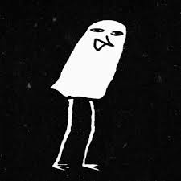
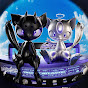
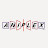
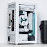

Search
Voice Search
Create
Create
3
Notifications

Home
Explore
Subscriptions
Originals
YouTube Music
Library
Flawed Mangoes - Immaterial (Visualizer)
Flawed Mangoes
187K views · 1 year ago
Dream, Ivory - welcome and goodbye (Official Video)
Dream, Ivory
12M views · 2 years ago
[TUTORIAL] How to Color Anime Hair: THE SEQUEL
SomeNormalArtist
985K views · 3 years ago

Moonlight
CHASE ATLANTIC
8.5M views

TVアニメ『ヲタクに恋は難しい』ノンクレジットOP／sumika「フィクション」
アニプレックス チャンネル
31M views · 6 years ago

最小4070海景房？The most mini sea view room gaming PC with RTX4070
Ander
301K views · 2 months ago
YOASOBI「アイドル」 Official Music Video
Ayase / YOASOBI
576M views · 1 year ago
Building white pc for my friend🍥🤍 | TRYX panorama 360, LUCA L70
안미르 Annmir
383K views · 3 months ago